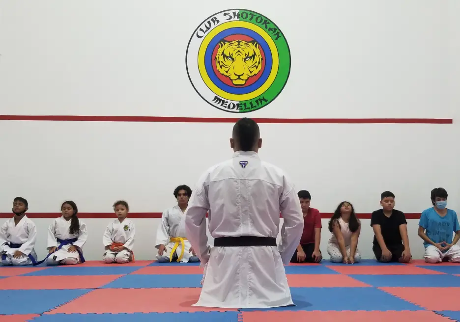
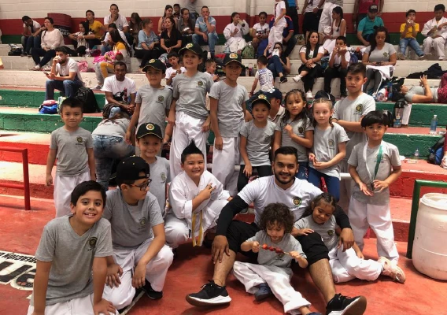
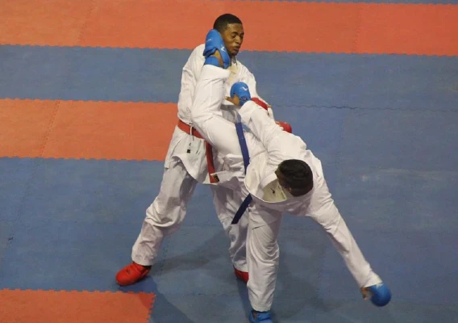

Historia
Desde el inicio del club en el 2007 hasta la fecha han sido muchos los deportistas que han pisado nuestro Dojo y que se han llevado en ellos algo de nosotros; el club shotokan desde antes de ser una realidad se proyectó para que no solo fuera un club que enseña un arte marcial, si no algo mayor, una entidad que impacta social y positivamente vidas y comunidades, esta ha sido la filosofía que nos ha llevado por el camino del gratificante aprendizaje todos estos años y de la cual estamos orgullozos.

Recorrido
deportivo
El club shotokan tuvo oficialmente su inicio en el año 2007 en los espacios del estadio, fue el Sensei Gustavo Agudelo quien estuvo a la cabeza dela club por varios años, entregando su conocimiento y haciendo crecer en nombre y numero al club shotokan medellin.

Posicionamiento
En el año 2018 el club shotokan pasó a ser dirigido por el nuevo Sensei Camilo Ocampo quien fue deportista del club desde sus inicios y crecio alli con su carrera deportiva representando el club en torneos nacionales e internacionales dando aun más renombre a la entidad y llevando el club shotokan a diferentes rincones del mundo.
>